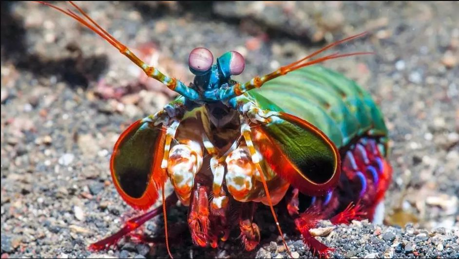

Fatos sobre o Stomatopoda
Taxonomia |
|
|---|---|
| Reino: | Animalia |
| Filo: | Arthropoda |
| Subfilo: | Crustacea |
| Classe: | Malacostraca |
| Subclasse: | Hoplocarida |
| Ordem: | Stomatopoda |
Que animal é esse?
O Odontodactylus scyllarusmspa (nome científico), chamado popularmente de tamarutaca ou de lacraia-do-mar no Brasil, é caracterizado principalmente pela morfologia da segunda pata torácica, que é modificada em apêndice subquelado, lembrando uma pata de louva-a-deus.
O Soco mais rapido do Reino Animal!
Os stomatopoda são parentes agressivos de caranguejos e lagostas e atacam outros animais, paralisando-os com golpes devastadores. Suas armas secretas são um par de braços articulados dobrados sob a cabeça, que eles podem desenrolar em velocidades incríveis.
As espécies maiores de 'esmagadores' têm braços que terminam em clavas pesadas e as usam para desferir golpes com a mesma força de uma bala de fuzil. A cada soco, a borda da clava viaja a cerca de 80km/h .
A clava se move tão rapidamente que a pressão da água à sua frente, fazendo com que ferva. Isso libera pequenas bolhas que colapsam quando a pressão da água se normaliza, liberando enormes quantidades de energia. Esse processo, chamado cavitação , é tão destrutivo que pode danificar o aço inoxidável das hélices dos barcos

Uma maneira única de ver!


Os olhos mais extraordinários do reino animal pertencem aos camarões louva-a-deus, ou estomatópodes – ele pode medir a profundidade e a distância por conta própria, focando em objetos com três regiões separadas. Eles podem ver um tipo especial de luz espiralada chamada luz circularmente polarizada que nenhum outro animal pode. E eles têm uma estrutura em seus olhos que é semelhante à tecnologia encontrada em aparelhos de CD e DVD, só que muito mais eficaz.
A maioria das pessoas tem três tipos de células de detecção de luz, ou fotorreceptores, em suas retinas, o camarão mantis tem doze fotorreceptores diferentes.Apesar disso, os camarões mantis são piores em distinguir cores diferentes do que humanos, abelhas e borboletas.
Pesquisas mostraram que os camarões louva-a-deus definitivamente não veem as cores da mesma maneira que nós, mas o que eles realmente fazem é um mistério. Agora, eles estão tentando descobrir o que acontece com os sinais quando eles saem dos fotorreceptores e como essas células estão conectadas ao cérebro.